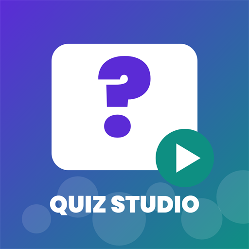

Quiz Studio IAÚltima atualização: 31 de outubro de 2026 · Responsável: Ricardo Negrão · Contato: ricardonegrao@gmail.com
O Quiz Studio IA (“app”) é um aplicativo que roda no computador do próprio usuário. Esta política explica quais dados o app acessa, para quê, onde ficam e como apagá-los.
O app só acessa uma plataforma quando você conecta a sua conta e autoriza as permissões na tela oficial da plataforma.
user.info.basic: identificador da conta (open_id), nome de exibição e foto, para mostrar qual conta está conectada.video.upload: enviar o vídeo que você escolheu para a sua caixa de entrada do TikTok, como rascunho.video.publish: publicar o vídeo que você escolheu diretamente no seu perfil, com a privacidade e as opções que você definir.video.list (opcional): ler a lista e as estatísticas públicas dos seus vídeos (visualizações, curtidas, comentários, compartilhamentos), para mostrar o desempenho dos vídeos publicados pelo app.youtube.upload: enviar o vídeo que você escolheu para o seu canal, com o título, a descrição, a visibilidade e as declarações que você definir.youtube.readonly: ler o nome e a foto do canal e as estatísticas dos vídeos enviados pelo app.O app não lê mensagens, seguidores, comentários de terceiros nem qualquer outro dado das suas contas além do descrito acima.
Os tokens de acesso e as estatísticas ficam somente no seu computador, na pasta de dados do app (data/). O desenvolvedor não opera servidor que receba, armazene ou processe suas contas, vídeos ou estatísticas.
O uso do YouTube pelo app está sujeito aos Termos de Serviço do YouTube e à Política de Privacidade do Google. O uso do TikTok está sujeito aos Termos de Serviço do TikTok.
Os dados são usados apenas para as funções descritas acima. O app não vende dados, não exibe anúncios, não cria perfis de usuário e não compartilha dados com terceiros além dos serviços listados no item 3. O uso de informações recebidas das APIs do Google segue a Política de Dados do Usuário dos Serviços de API do Google, incluindo os requisitos de Uso Limitado.
O app é uma ferramenta para criadores de conteúdo e não é destinado a crianças. O uso das contas conectadas deve respeitar a idade mínima exigida por cada plataforma.
As credenciais ficam somente no computador do usuário e as comunicações com as plataformas usam HTTPS. Mantenha o seu computador e o arquivo de configuração do app protegidos.
Você pode pedir informações, correção ou exclusão de dados pelo contato abaixo. Como os dados ficam no seu próprio computador, a exclusão é imediata ao desconectar as contas e apagar a pasta de dados.
Esta política pode ser atualizada; a data no topo indica a versão vigente. Dúvidas: ricardonegrao@gmail.com.